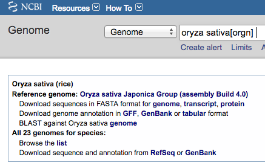
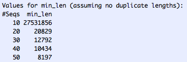

Overview
This document corresponds to the ConvertNCBI release with SyMAP v5.0.2 (date 24-Feb-2020).
NCBI supplies FASTA formated files for genome sequence and GFF3 formated files for the annotation,
where FASTA and GFF3 files are the input to SyMAP.
However, using them directly can cause problems.
The following provides a simple scheme to produce only the files necessary.
Contents
Download
- Go to NCBI.
- Select "Genome" from the pull-down at the top, as shown in Fig 1.
- Enter you genome name followed by "Search".
You should see a page similar to the one below.
- Download the FASTA and GFF file.
The GFF file must have the "product=" keyword in the attribute column for the mRNA type line.
Two approaches:
- Use the genome link beside the "Download sequences in FASTA format for genome,..."
Use the GFF link beside the "Download genome annotation in GFF...".
- Or use the RefSeq link in the "Download sequence and annotation from
RefSeq..." and download the files with the "fna.gz" and "gff.gz" suffixes.
Usually the first approach has the correct format , but if it does not, try the second. A correct format for
input to ConvertNCBI has: (1) The 'product' keyword should be in
the mRNA attribute line, not the CDS, (2) The source is typically 'Gnomon'.

Fig 1. An example of the genome on the NCBI site.
Convert files
- Go to the symap_5/data/seq directory.
- Make a subdirectory for your species and move the FASTA and GFF files
into the directory. Leave the "fna.gz" and "gff.gz" suffixes on the files.
- Type the following at the command line to copy the ConvertNCBI script to the seq directory:
cp ../../scripts/ConvertNCBI*.class .
chmod 755 *.class
- Execute
java ConvertNCBI <species>
Example
In symap_5/data/seq directory, I made a subdirectory called "rice" and
moved the .fna.gz and gff.gz files into it:
data/seq/rice/
GCF_001433935.1_IRGSP-1.0_genomic.fna.gz
GCF_001433935.1_IRGSP-1.0_genomic.gff.gz
From the symap_5/data/seq directory, I executed:
cp ../../scripts/ConvertNCBI*.class .
chmod 755 *.class
java ConvertNCBI rice
This results in the following contents:
data/seq/rice/
GCF_001433935.1_IRGSP-1.0_genomic.fna.gz
GCF_001433935.1_IRGSP-1.0_genomic.gff.gz
annotation/
gene.gff
exon.gff
sequence/
genomic.fna
The output gives useful details of the annotation (e.g. see rice details);
if the details do not appear right, you may need to edit the
script for your genomes.
ConvertNCBI optional flags:
| Flag | Description | Details | Default
| | -m | Hard-mask | NCBI genome sequences are soft-masked, which is changed to hard masked | Leave as soft-mask
| | -v | Verbose | Print out header lines of skipped sequences | No print
| | -s | Include Scaffolds in output | See section Scaffolds | No scaffolds
| | -l | Use linkage groups | Search 'linkage' instead of 'chromosome' | Use chromosomes
| | -r | Use only RefSeq records | -r and -g can be used together | Use all sources*
| | -g | Use only Gnomon records | -r and -g can be used together | Use all sources*
|
*If neither -r or -g is used, then all sources are used.
Load files into SyMAP
The above scenerio puts the files in the default SyMAP directories.
When you start up SyMAP, you will see your projects listed on the left of the panel. Check the projects
you want to load, which will cause them to be shown on the right of the symap window. The
default parameters for the converted Ensembl projects will probably be sufficient.
Select "Load All Projects".
Once loaded, you can run the synteny algorithm be selecting "All Pairs". If you want to compute self-synteny,
you have to do that individually with the "Selected Pair" button.
What the ConvertNCBI script does
The following occurs in the data/seq/<project directory name> where "project directory name"
is the argument supplied to ConvertNCBI:
Scaffolds
By default, the ConvertNCBI script creates the genomic.fna file with only the chromosomes.
However, you can have it also include the scaffolds by using the "-s" flag, e.g.
java ConvertNCBI rice -s
This will include all chromosomes (prefix 'c') and scaffolds (prefix 's') in the genomic.fna file.
Beware, there can be many tiny scaffolds. If they all aligned in SyMAP, it causes the display to be very cluttered.
Hence, it is best to just align the largest ones (e.g. the longest 50); merge them if possible, then try
the smaller ones. You should set the following SyMAP project parameters:
- Set grp_prefix to blank.
- min_size should be set to only load the largest scaffolds. To determine the value to use, run the
lenFasta.pl script,
e.g. from the seq directory and using rice as an example:
cp ../../scripts/lenFasta.pl .
perl lenFasta.pl rice/sequence/genomic.fna
- Use SyMAP v5.0.2.
As of 20-Feb-20 (GCF_001433935.1_IRGSP-1.0_genomic.fna),
rice has 58 sequences where 12 are chromosomes, 43 are scaffolds
and 3 are other. The script outputs all their
sorted lengths followed by the following table:

To align the top 30 sequences (12 chromosomes, 18 of the largest scaffolds),
this says to set min_size to 12792.
Editing the script
This script was used to build the 2020 syntenies from
the NCBI genome and annotation files, which can be viewed at
symapdb3.
However, you may want the make changes such as what attributes are included. Therefore, the ConvertNCBI.java
code is supplied in the scripts directory. It is very simply written, it does not use external libraries
and only common programming techniques found in all programming languages.
Once you make your changes, execute:
javac ConvertNCBI.java
You will need to have JDK installed to use the 'javac' command.
When building the 2018 SyMAPdb2, I found a few inconsistencies, but now there appears to be
better standardization. The only problem I found is that sometimes it was necessary to use the
RefSeq link, as noted at the top.
|

{kind=link}
{kind=link}